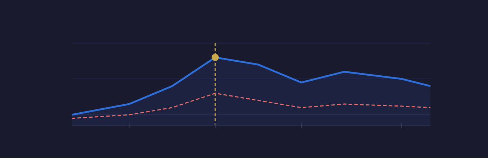

About Me
IT and data professional with experience in systems analysis, reporting, and technical problem solving. Skilled in building and improving processes, working with data to support decision making, and collaborating across technical and business teams. Detail-oriented, quick to learn new tools and technologies, and focused on turning information into solutions.
Projects
Global Device Lifecycle Dashboard
End-to-end device lifecycle dashboard built using exported Jira Assets data. Identified 56 actively deployed devices past their 4-year replacement threshold across global offices, and flagged 11 retired devices with no audit record as a data security risk.
- Cleaned and transformed raw asset data in Excel using helper columns and pivot tables
- Built interactive Power BI dashboard with KPI cards, treemap, map, donut chart, and matrix
- Delivered actionable procurement recommendations to IT leadership
- Added compliance page identifying unaudited retired devices
Online Sales Analysis
Cleaned and analyzed over 40,000 sales records, addressing missing data and format inconsistencies to uncover key revenue insights across countries and product categories.
- Choropleth map displaying revenue by country
- Stacked area chart showing revenue trends over time
- Bar chart highlighting top-selling products by revenue
Bike Sales Analysis
Cleaned and analyzed 1,000+ customer records. Built interactive Excel dashboards with pivot tables exploring the relationship between income, age, commute habits, and bike purchases.
- Interactive filters across all charts for dynamic exploration
- Bar chart showing customer income vs purchase amounts
- Line graph visualizing age distribution and commute trends
Work-Life Balance Insights Analysis
Analyzed 2,000+ records to visualize work-life balance patterns including job satisfaction trends, depression risk levels, and financial stress correlations.
- Interactive Tableau dashboards with drill-down capability
- SQL queries for data cleaning, aggregation, and extraction

Layoffs Cleaning Analysis
Analyzed 2,000+ data points on global layoffs between 2020 and 2023 using MySQL for cleaning and extraction. Identified which sectors, regions, and companies were most impacted.
- Layoffs analyzed by country, industry, and location
- Tracked largest single-event layoffs and company-level impact
Experience
Support and maintain IT systems across a global organization, coordinating with teams in the US, Japan, China, and other international offices. Collaborate cross-departmentally with finance, marketing, and operations teams to assess technology needs and implement solutions. Assist in system evaluations, migrations, and process improvements while maintaining documentation for knowledge sharing across departments and regions.
Monitored and analyzed daily batch processes using Automic, identifying issues and implementing solutions to maintain operational efficiency. Built and maintained internal documentation and reporting systems. Partnered with business teams to support core banking applications and led device deployment using Microsoft Intune and Azure AD during an organization-wide hardware refresh.
Developed and maintained websites using HTML, CSS, JavaScript, and MySQL. Conducted data analysis and reporting in Excel to improve user engagement by 5%. Optimized code across 1,000+ websites and collaborated with cross-functional teams to resolve technical issues and implement client feedback.
Provided day-to-day technical support for a small second-hand retail store, assisting with POS systems, printers, and basic network troubleshooting. Used QuickBooks and Square data to generate sales and inventory reports, helping management make informed purchasing and operational decisions. Set up and maintained desktop hardware, barcode scanners, and receipt printers to ensure reliable store operations.
Education
Certifications
- Google Data Analytics Certificate — Google / Coursera In Progress
- Responsive Web Design — freeCodeCamp
- Data Analyst Certification — Alex The Analyst
Interests
I am a Vermont native who enjoys the outdoors — hiking, camping, and this year I picked up snowboarding.
My favorite TV show is Star Trek: The Next Generation. My favorite character is Data — an android who approaches every problem with logic and precision, always seeking to understand and improve. I find that relatable.
My favorite movies are The Truman Show (1998) and The Shawshank Redemption (1994).
I love to read, and my favorite quote is:
"All things are difficult before they are easy." – Thomas Fuller